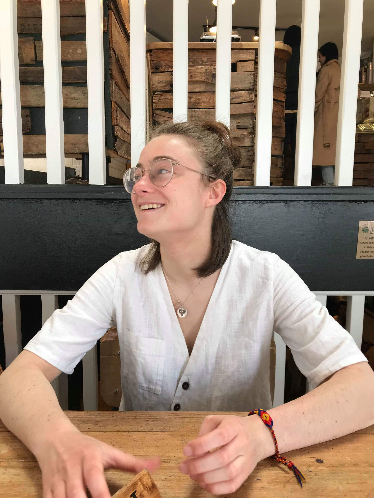

Hi FAC crew, welcome to my website :)
I am interested in tech
One of the main reasons I want to learn coding is that I am interested in tech. My fascination with technology probably started through an internship I did during my gap year at the Institute of Technology and Society in Rio (ITS Rio). The name is pretty self-explanatory, but it is a think tank which focuses on leveraging the positive impacts that tech can have on society whilst also understanding the potential negative impacts of risks associated with certain technologies. At the time, the think tank was working on a project called Mudamos which used blockchain technology to enable the online signing of bills by Brazilian citizens so that these could be presented to Congress. This gave me a first taste of how awesome technology can be as well as how interesting it is. At university, I took various modules which focused on science and technology such as The Governance of Emerging Technologies, Tech Journalism, Science Policy and Science Peace and Warfare. These modules were all amongst my favourite classes, and confirmed my desire to work in the tech sector.
I want to be able to make stuff
Although I was more on the admin side of things when ITS were developing their Mudamos App, I started researching blockchain technology and how it worked in my own time. This led me to join London Blockchain Labs as a member of the executive team when I got to university. I greatly enjoyed spending time with individuals who were equally interested in technology, and getting people from interesting blockchain-related companies to come in and talk about their vision. However, I soon realised that I wasn’t satisfied enough. I became frustrated that I could not be a part of the LABS team which were focussing on developing new projects. I want to learn programming to be able to be a part of the teams at the heart of tech development. Beyond learning about new technology and understanding how it works, I want to be able to actually use it to build my own projects. I never really considered myself a creative person, but when I started thinking about programming I realised that I enjoy coming up with new ideas for websites or apps. I would like to have the technical skills to be able to develop my own projects.
I like learning languages
I was lucky enough to grow up bilingual (English and French) and then learnt Spanish at school. When I spent three months in Brazil during my year out after high school, I also taught myself Portuguese. At the moment, I am learning Arabic. I have come to realise that many of the reasons for which I enjoy learning languages also apply to programming.It is the kind of knowledge that cannot be forgotten: once you have learnt a new word, it is hard to forget it. Whenever you see it again, the meaning will come back to you, and you can also use the context to deduce its meaning. The more languages you know, the more you can guess the meaning of words. Although there are different languages in programming, knowing one can often help you understand another. There is no single right answer: one thing which is encouraging about learning a language is that once you know the basics, you can always get the meaning across, no matter how clumsy the approach might be. This means that you can learn through practice: you might start out making very weird sentences, but as you speak to more and more people you start incorporating new vocabulary and understanding the best way of saying things. With coding, it is the same. As I have been doing some of the codewars for my application, I have noticed that I can solve many of the problems with the small amount of programming I know. Whilst I am aware that sometimes the code I am writing is not the most efficient way of doing things, it is encouraging to still be able to do things and then compare what I have written with other peoples solutions so that I can learn from them and use these in the future.
I want to defy stereotypes
There is a huge deficit of women in science and technology. Big tech giants like Google, Apple, Facebook and Microsoft have less than 25% of women in their tech departments. I strongly believe that technology is not neutral, and that teams designing new technologies should be diverse to avoid biases and ensure that they are building solutions for society as a whole rather than tackling problems faced by a small section of the population.
Tech for social good
One of the main aspects that drew me to Founders and Coders is your focus on tech for social good. I first heard about Founders and Coders through the 80,000 hours blog, an organisation that stems from the effective altruism movement. I am interested in the ways in which technology can be leveraged to create, improve and scale social impact initiatives.
I am very interested in the nonprofit world, and am currently running the London Chapter for a non-profit called Opportutoring. We provide free English tutoring to refugees in order to help them access better job opportunities or university. We will actually be taking on some students from Gaza Sky Geeks, which I found out about whilst browsing through your ‘tech for social good’ section.
I was also able to attend Accelerate Good Global, an event focussed on tech for social good and which was moved online due to the coronavirus lockdowns.
I would like to put my programming skills towards having a social impact, be it through working at a non-profit or volunteering in my spare time.
Teaching style
I was also drawn to the FAC teaching style. As someone who enjoys learning through discussions with my peers, I believe that your model focussed on pair programming is well suited to me. Actively engaging with the material through peer programming and by getting everyone to figure out the solution together is a much better way of learning than being spoon-fed knowledge. To come back to your focus on social impact, I also love the fact that we will be working on projects for non-profit organisations in the second stage of the program. I believe this is a great way of increasing motivation, encouraging students to do their maximum as well as producing useful outcomes from the learning process.
Inclusivity and accessibility
I strongly appreciate the effort that FAC has put into making the program free. I believe that the current price of other bootcamps adds a financial barrier to entry, which negatively impacts access to such opportunities and thus contributes to inequality. In addition to this, the fact that you ensure at least half of the cohort ensures that you are inclusive and work towards increasing diversity in tech.
Community
I actually really enjoyed the application process. I believe it’s a great way of ensuring that the FAC cohorts are made up of individuals who have a strong motivation to study programming and are sure that they actually enjoy it. The fact that FAC has such a clear set of values and is based on the idea of giving back through help with the next cohorts means that it builds a strong sense of community amongst students. I have only heard good things about Founders and Coders from individuals of previous cohorts, and the fact that graduates sometimes come back to redesign or add to the curriculum even years after they’ve left speaks mountains for the strength of the FAC community.